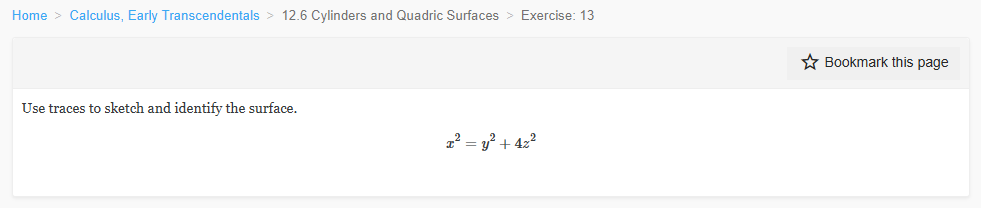
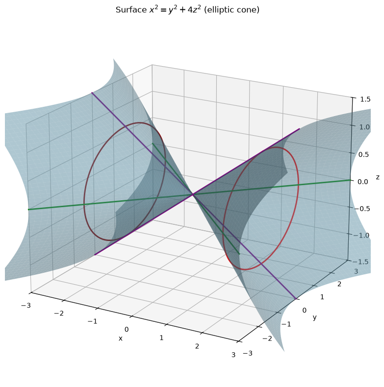
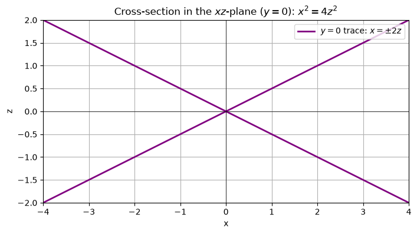
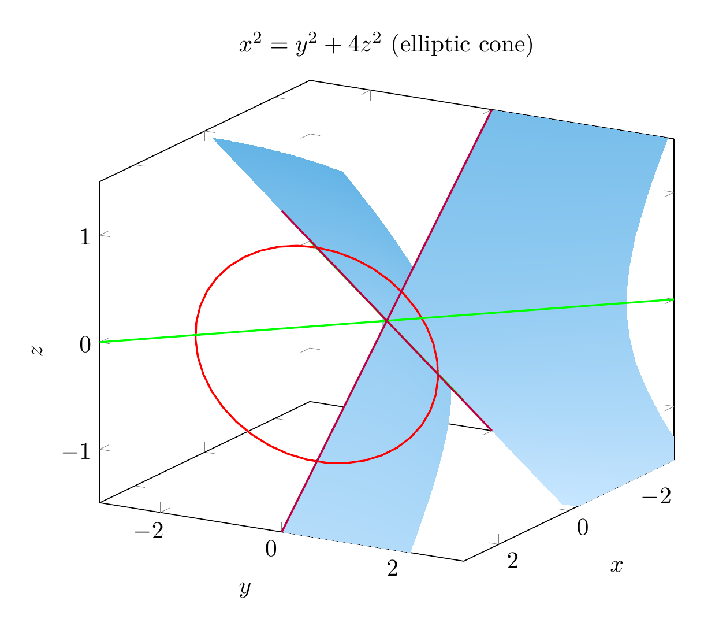
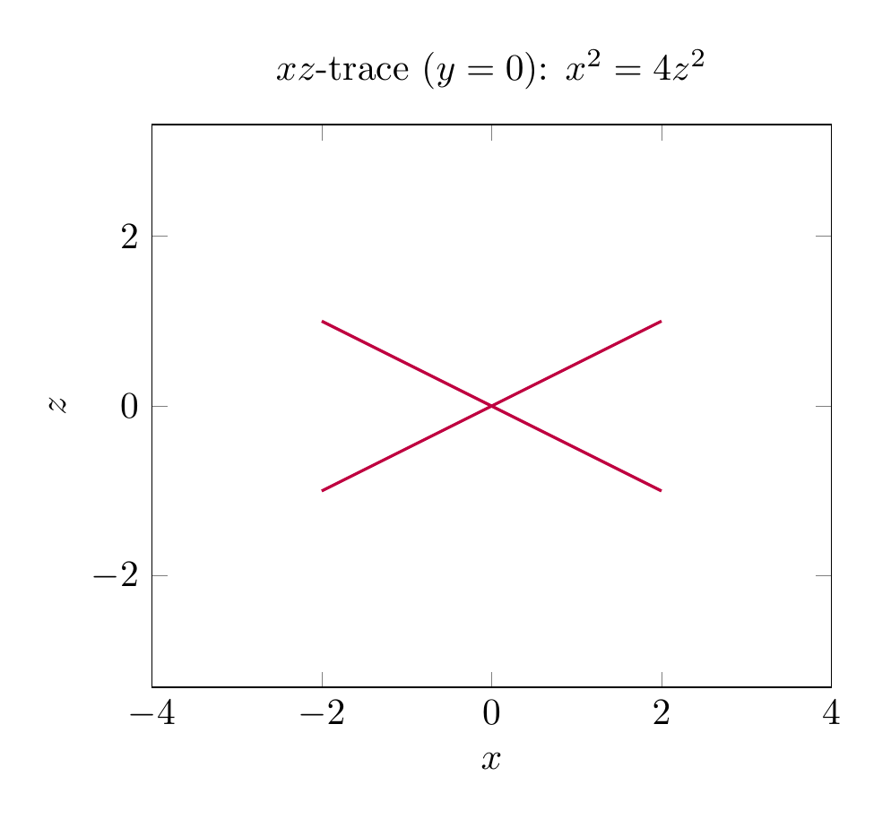

Path: mcma-Kimi-K2.7-Code/calculus-12.6.13/chat_20260825_023926_171530_utc_0800
Problem
Please solve the math problem in the image.

End of problem
Answer
# Solution: Identify and Sketch $x^2 = y^2 + 4z^2$
## 1. Recognize the type of quadric surface
Write the equation in standard form by dividing by the right-hand side (when it is nonzero):
$$
\frac{x^2}{1} - \frac{y^2}{1} - \frac{z^2}{1/4} = 0
\quad\Longleftrightarrow\quad
x^2 = y^2 + 4z^2.
$$
This is the standard equation of an **elliptic cone** whose axis is the $x$-axis and whose vertex is the origin $(0,0,0)$. The surface has two nappes, opening in the positive and negative $x$-directions.
## 2. Use traces to confirm the shape
A trace is the intersection of the surface with a plane parallel to one of the coordinate planes.
### Trace with $x = k$ (plane perpendicular to the $x$-axis)
Substitute $x = k$:
$$
y^2 + 4z^2 = k^2.
$$
For $k \neq 0$ this is an **ellipse** in the plane $x=k$ with semi-axes
$$
\text{semi-axis in } y = |k|, \qquad \text{semi-axis in } z = \frac{|k|}{2}.
$$
For $k=0$ the trace collapses to the single point $(0,0,0)$, the vertex.
### Trace with $y = k$ (plane perpendicular to the $y$-axis)
Substitute $y = k$:
$$
x^2 - 4z^2 = k^2.
$$
This is a **hyperbola** opening in the $x$-direction. The asymptotes are $x = \pm 2z$.
### Trace with $z = k$ (plane perpendicular to the $z$-axis)
Substitute $z = k$:
$$
x^2 - y^2 = 4k^2.
$$
This is also a **hyperbola**, opening in the $x$-direction, with asymptotes $x = \pm y$.
### Coordinate-plane traces
- In the $xy$-plane ($z=0$): $x^2 = y^2$, so $x = \pm y$. These are two straight lines through the origin.
- In the $xz$-plane ($y=0$): $x^2 = 4z^2$, so $x = \pm 2z$. These are also two straight lines through the origin.
Because the coordinate-plane traces are pairs of intersecting lines, the surface is a **cone** rather than a hyperboloid.
## 3. Sketch
The sketch shows the two nappes of the elliptic cone opening along the $x$-axis. A typical horizontal trace $x=k$ is an ellipse, while vertical traces $y=k$ or $z=k$ are hyperbolas.
## 4. Final identification
$$
\boxed{\text{The surface } x^2 = y^2 + 4z^2 \text{ is an elliptic cone with axis the } x\text{-axis and vertex at the origin.}}
$$
---




\documentclass[border=10pt]{standalone}
\usepackage{pgfplots}
\pgfplotsset{compat=1.18}
\begin{document}
\begin{tikzpicture}
\begin{axis}[
width=10cm,
view={120}{20},
xlabel={$x$}, ylabel={$y$}, zlabel={$z$},
xmin=-3, xmax=3,
ymin=-3, ymax=3,
zmin=-1.5, zmax=1.5,
samples=40,
samples y=40,
colormap={bluewhite}{rgb255=(200,230,255) rgb255=(100,180,230)},
title={$x^2=y^2+4z^2$ (elliptic cone)}
]
\addplot3[surf, shader=interp, domain=0:2.5, domain y=-2.5:2.5] ({sqrt(x^2+4*y^2)},x,y);
\addplot3[surf, shader=interp, domain=0:2.5, domain y=-2.5:2.5] ({-sqrt(x^2+4*y^2)},x,y);
% Trace ellipse x=2 (in original coordinates: x=2, y^2+4z^2=4)
\addplot3[red, thick, samples y=0, domain=0:360] ({2},{2*sin(x)},{cos(x)});
% Trace lines in coordinate planes
\addplot3[green, thick, samples y=0, domain=-3:3] (x,x,0);
\addplot3[green, thick, samples y=0, domain=-3:3] (x,-x,0);
\addplot3[purple, thick, samples y=0, domain=-1.5:1.5] (2*x,0,x);
\addplot3[purple, thick, samples y=0, domain=-1.5:1.5] (-2*x,0,x);
\end{axis}
\end{tikzpicture}
\end{document}

\documentclass[border=10pt]{standalone}
\usepackage{pgfplots}
\pgfplotsset{compat=1.18}
\begin{document}
\begin{tikzpicture}
\begin{axis}[
width=8cm,
xlabel={$x$}, ylabel={$z$},
xmin=-4, xmax=4,
ymin=-2, ymax=2,
axis equal,
title={$xz$-trace ($y=0$): $x^2=4z^2$}
]
\addplot[domain=-2:2, samples=100, purple, thick] {0.5*x};
\addplot[domain=-2:2, samples=100, purple, thick] {-0.5*x};
\end{axis}
\end{tikzpicture}
\end{document}

End of answer